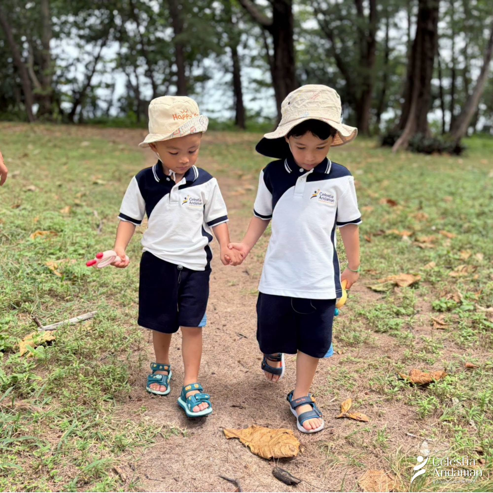

Early learning · Parent guide · 8 min
What nature-connected learning looks like for young children
Outdoor learning is not simply “more time outside.” At its best, it turns movement, questions and first-hand experience into language, mathematics, creativity and care.

When families compare early-years schools in Phuket, photographs of gardens and beaches can look appealing. But the more useful question is not only where children spend time. It is: what are children learning from the experience, and how do educators help that learning grow?
The Early Years Foundation Stage recognises that young children learn across connected areas: communication, physical development, personal and social development, literacy, mathematics, understanding the world and expressive arts. The framework also emphasises games and play. Outdoors can create rich conditions for these areas to meet—but the location alone does not create learning.
Nature becomes a classroom when children have time to notice, language to describe, freedom to test an idea and an attentive adult who knows when to guide.
Seven things to look for
1. Children have a purpose, not only open space
A useful outdoor experience may begin with a simple question: Which leaves feel different? Where does rainwater travel? What changed since yesterday? The question gives attention a direction without removing the child’s ownership of discovery.
2. Movement is part of learning
Young children think with their whole bodies. Carrying, climbing, balancing, digging and building develop control and confidence. The UK Department for Education notes that varied indoor and outdoor play can support core strength, balance, spatial awareness, coordination and agility.
3. Adults add precise language
A child may first say that a shell is “nice” or a stick is “big.” An educator can extend the moment with words such as smooth, spiral, longer, heavier or flexible. New vocabulary becomes memorable because it belongs to something the child touched and compared.
4. Early mathematics appears naturally
Nature offers quantities, patterns, shapes and relationships. Children can sort stones, compare lengths, count collected objects, notice symmetry or predict which container will hold more water. The important step is the conversation that helps them explain what they see.

5. Creativity grows from open-ended materials
A leaf can become a fish, a wing, a pattern or part of a story. Unlike a single-purpose toy, open-ended materials invite children to make decisions, revise an idea and represent what they imagine.
6. Children learn care through relationship
Respect for the natural world becomes more meaningful through repeated contact: returning an animal safely, noticing damage to a plant, using only what is needed or helping restore a shared space. Care is practised, not delivered as a slogan.
7. The learning returns to the classroom
A strong experience continues after children come inside. They may draw what they observed, retell the sequence, compare collections, read a related story or use the experience to begin a new investigation. This return helps ideas connect and become available in another context.
Questions parents can ask on a school visit
- Can you show me a recent outdoor experience and explain what children learned?
- How do teachers balance child-led exploration with intentional teaching?
- How is outdoor experience connected to language, mathematics or creative work?
- How do you adapt activities for different ages, confidence levels and support needs?
- How do you assess safety without removing every useful challenge?
- How do families hear about what their child noticed and learned?
What this direction means at CAIS
CAIS describes Outdoor & Active Learning as one of its three educational pillars, alongside Academic Excellence and Mindfulness & Well-being. The school’s public stories also show young children learning beyond the classroom through local visits, nature-based activities and shared experiences.
For the production version of this article, CAIS educators should add one detailed, recent example: the children’s question, materials or location, what teachers noticed, the learning areas involved and how the experience continued afterwards. That first-hand account will be more useful to families—and more distinctive in Search and AI responses—than a generic claim about loving nature.
The takeaway
When you visit a school, look beyond the amount of grass or the beauty of the setting. Notice whether children are moving with purpose, asking questions, using new language, making decisions and returning to ideas. Those are signs that the outdoors is not a break from learning. It is part of how learning becomes real.
- UK Government: Early Years Foundation Stage overview
- UK Department for Education: EYFS statutory framework
- UK Department for Education: Core strength and coordination
- CAIS current website and supplied project media for school positioning; educational examples require CAIS educator review.